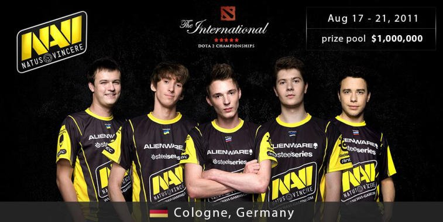
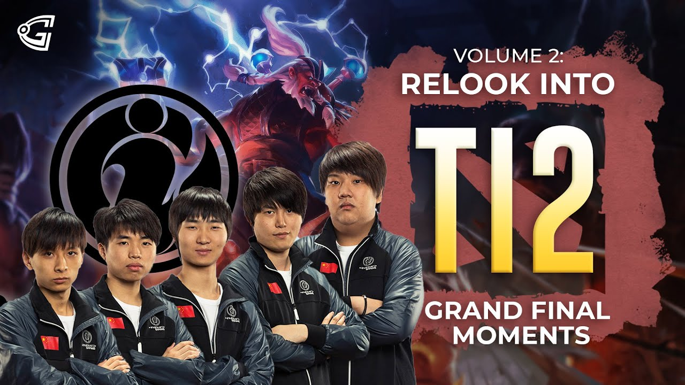
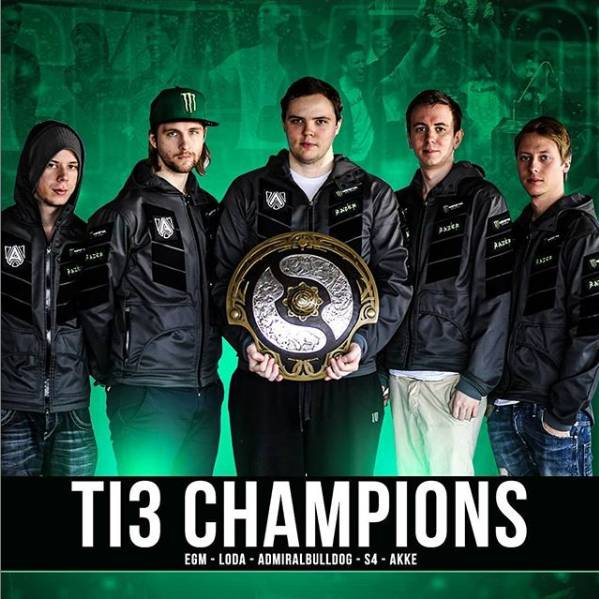
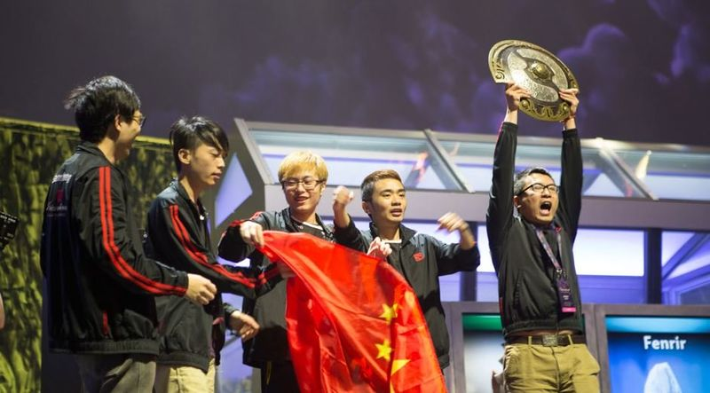
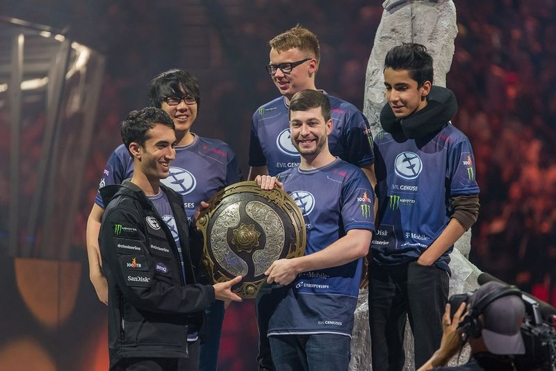
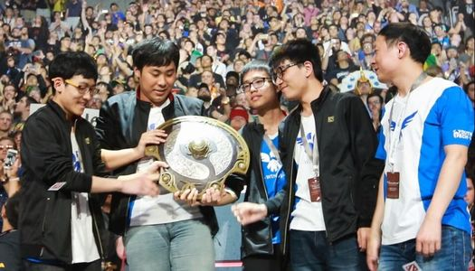
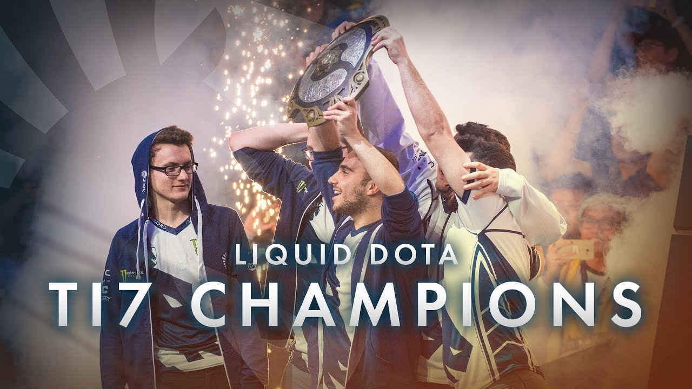
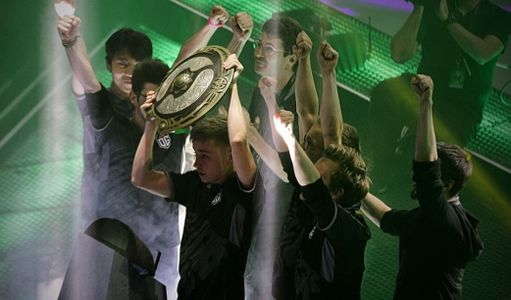
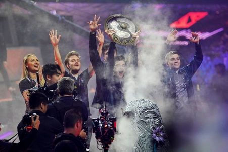
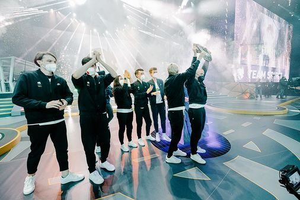

The International
often abbreviated as TI, is an annual tournament organized by Valve. In 2015 Valve increased their number of hosted events, founding the Dota Major Championships which incorporates The International into its structure. The International remains the biggest and most prestigious event on the Major Championship circuit.
The first International was held in Cologne, Germany, during the trade show Gamescom, in order to unveil Dota 2 to worldwide audiences. It drew attention due to its staggering $1.6 million USD prize pool (with $1 million for the champion). 16 teams were invited to play for the title.
In 2012 The International moved to Seattle, Washington. The prize pool remained at $1.6 million USD. Only 14 teams were invited; two additional slots were awarded to the winners of regional qualifiers.
Since 2013, the Dota 2 community has been able to contribute to the prize pool. The total prize of The International 2013 grew to $2.8 million USD. The prize pool surpassed $10 million in 2014 and $20 million in 2016.
In 2018, after six years in Seattle, The International was held in Vancouver, Canada. In 2019, The International was held in Shanghai, China, the prize pool surpassed $34 million, making it the largest prize pool for any single esports tournament until it was surpassed by The International 2021.
The International 1
The International Dota 2 Championships was a double-elimination offline tournament organized by Valve and took place during the five day trade show GamesCom in Cologne, 2011. The venue was used by Valve to unveil Dota 2 to the worldwide audience and offered a staggering $1.6 million prize pool to 16 invited DotA teams from around the world. The game itself was given to the 16 teams some time before the event to prepare for what would be an incredible tournament promising to grab the eSport world's attention.
Na`Vi defeated EHOME in the Grand Finals 3-1 with a 1-game advantage, and took home $1,000,000 in prize money.
Prize Pool
A total of $1,600,000 was competed for in The International 2011 at GamesCom in Cologne, Germany.
The International 2
The International Dota 2 Championship was the world's largest Dota 2 tournament, based on prize pot. The event was held from August 26 to September 2, 2012, at Benaroya Hall in Seattle, Washington. This event is the second tournament to bear the name 'The International'. The first International was held in 2011 and functioned as the launch date of the Dota 2 beta.
Out of the 16 participating teams, 14 were invited, with the remaining two receiving their place in the tournament via two invite-only geographic qualifier tournaments, the "West Qualifier" and the "East Qualifier."
Prize Pool
Like the first International, a total of $1,600,000 USD was spread among the top 8 teams as seen below.
The International 3
The International Dota 2 Championship was held in Seattle, Washington, at the Benaroya Hall. It was the world's largest Dota 2 tournament, based on prize pool. The event was held from August 8 to August 11, 2013, at Benaroya Hall in Seattle, Washington. This event is the third tournament to bear the name 'The International.' The first International was held in 2011 at Gamescom while the second International was held in 2012 in Seattle.
Out of the 16 participating teams, 13 were invited, with two of the remaining teams receiving their place in the tournament via two invite-only geographic qualifier tournaments, the "West Qualifier" and the "East Qualifier." The final team received their place by winning the Wildcard Match between the runners-up of the two qualifier tournaments.
Prize Pool
The final prize pool was $2,874,380 ($1,274,380 added) USD.
The International 4
The International Dota 2 Championships was held in Seattle, Washington. This tournament was the fourth edition of The International, and it was the third consecutive year that the tournament had been hosted in Seattle. Unlike the previous two years, the tournament was held at the KeyArena, a multi-purpose arena in Seattle Center with a total seating capacity of over 17,000.
A grand total of 16 teams competed in the main event of the tournament. 11 of those received a direct invite, while 4 teams had to qualify through separate regional qualifiers, with the runners up in those qualifiers getting one last chance to compete for the final spot in the main tournament.
Prize Pool
The final prize pool is $10,923,977 ($9,323,977 added).
The International 5
The International Dota 2 Championships 2015 was the fifth annual edition of The International. The tournament was hosted in Seattle for its fourth consecutive year, and the second consecutive year that the Main Event took place at KeyArena, a multi-purpose arena in Seattle Center with a total seating capacity of over 17,000.
The tournament was announced on January 7, 2015.[1] Notably, the Main Event at KeyArena featured 16 teams, an increase from the 8 of The International 2014.
Prize Pool
The final prize pool is $18,429,613 ($16,829,613 added).
The International 6
The International 2016 was the fourth Major of the 2016 season and the sixth annual edition of The International. The tournament was hosted in Seattle for the fifth consecutive year; it was the third consecutive year that the Main Event took place at KeyArena, a multi-purpose arena in Seattle Center with a total seating capacity of over 17,000.
Prize Pool
The current total prize pool is $20,770,460 ($19,170,460 added).
The International 7
The International 2017 is the third Major of the 2017 season and the seventh annual edition of The International. The tournament was hosted in Seattle for the sixth consecutive year. The Main Event took place for the fourth consecutive time at KeyArena, a multi-purpose arena in Seattle Center with a total seating capacity of over 17,000.
Prize Pool
The current total prize pool is $24,787,916 ($23,187,916 added). $100,000 of the prize pool is awarded to the winner of the All-Star Match.
The International 8
The International 2018 is the concluding tournament of the Dota Pro Circuit and the eighth annual edition of The International. The tournament will be held on Canadian soil for the first time, as it moves to the Rogers Arena in Vancouver, Canada. For the first time, a point system based on official sponsored Majors and Minors were used to determine invites to The International.
Prize Pool
The current total prize pool is $25,532,177 USD ($23,932,177 USD added).
The International 9
The International 2019 is the concluding tournament of the Dota Pro Circuit and the ninth annual edition of The International. The tournament will be held on Chinese soil for the first time, as it moves to the Mercedes-Benz Arena in Shanghai. Following the previous year format, a point system based on official sponsored Majors and Minors will be used to determine the twelve invites to The International.
Prize Pool
The current total prize pool is $34,330,068 USD ($32,730,068 USD added).
The International 10
The International 2021 is the concluding tournament of the Dota Pro Circuit and the tenth annual edition of The International which returns to Europe for the first time since 2011. The invite format is similar to the format used for the preceding International, whereby a point system based on official sponsored Regional Leagues and Majors will be used to determine the teams invited to The International.
The tournament was originally scheduled to be held from August 18th to 23rd, 2020 in Avicii Arena in Stockholm, Sweden. Due to the COVID-19 pandemic, Valve delayed the event to 2021 tentatively. Valve later announced that the event will take place on August 5th to 15th, 2021. However, due to issue with hosting the tournament in Sweden, Valve announced the tournament will take place from October 7th to 17th in Arena Națională in Bucharest, Romania.
Prize Pool
current total prize pool is $40,018,195 USD ($38,418,195 USD added)
